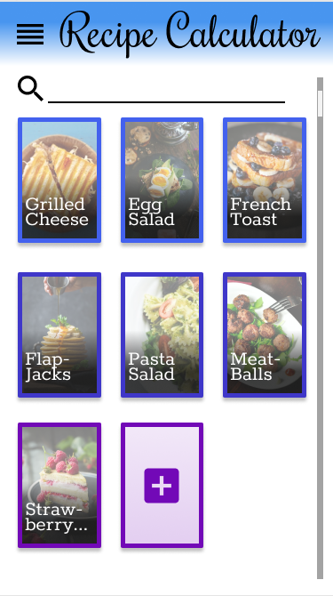
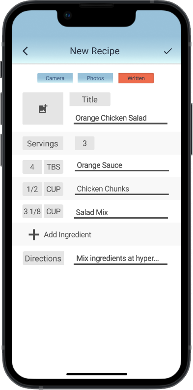

Introduction
The Problem

My wife and I have recently gotten into trying new recipes. We love to
cook and will often look up recipes on the Internet to try. But we
have noticed that we keep running into the same problems.
Here is my list of the most frequent problems we face with keeping and
changing recipes:
- Returning to a website to find a recipe can be tiresome as you often have to scroll far down the page to find what you are looking for.
- Serving sizes are all over the place. Some recipes will give us leftovers for days and others don’t seem to be enough.
- We are not very good at doing the conversions to change the recipe how we need.
- We do not have a place to keep our favorite recipes, we usually just keep photos of the recipe in our phone’s photo app, which can get disorganized.
Initial Research
I started research by looking into different recipe apps, I found many apps that had features that I wanted to include in my own design. I jotted down ideas that looked interesting and that I wanted to try out myself. I also looked into apps that weren’t for cooking, but that used a database-type system. These were especially helpful for me. I saw their take on managing information and how they present it to the user. Once I had a notebook full of ideas, I drew out my first rough draft on some note cards.

Rounds of Usibility Testing
Scenarios
To create my scenarios, I looked at what a new user would need to do
after installing the app. I wanted to create a very simple and
effective process for new users. So, I considered the main focus of
the app itself, to save recipes from photos or written in by the user
into a database, to be able to multiply the serving size and
ingredients, and to be able to edit saved recipes.
Scenario 1: You have just downloaded the recipe calculator app and
would like to save a handwritten recipe for “orange chicken salad”
from a note card. (I changed this one up occasionally by telling the
user that they already have a photo saved in their phone and that they
need to write in a new recipe by hand)
Scenario 2: After scanning in your orange chicken salad recipe to the
app, you would like to double the recipe’s ingredients.
Scenario 3: You have experimented with your recipe and now want to
edit the orange chicken salad recipe so that you add double the
chicken.
-
Basic Iterations
notecards
Here I used notecards to layout the first iteration of my app. The purpose of this iteration is to only figure out the layout for buttons, images, and text. I had three people try this version of the app, my wife and two classmates. I learned that, although the new recipe button was nice, I should probably remove the footer and leave the navigation to the header.

-
Wire Frame
Figma
This was my first basic outline on Figma. I used basic grey boxes represent my wire frame buttons. I used three friends at a get together for my usability testing. I learned that the add recipe button was kind of a tricky concept. Although it seemed simple to me, it was not simple to my users, so I needed to find a new place to put the add recipe.

-

Design Work v.1
Figma
This was my first attempt at designing the interface area. I was just learning Figma controls and got ahead of myself. I used my wife for the usability testing on this version because she is an art major and has a real knack for design. Unfortunately, she was my only user testing applicant for this version. After inspecting the app, she used her veto power to tell me to get back to the drawing board. “This ain't it, chief” she said.
-
Design Work v.2
Figma
I decided to get back to basics, I use only a grey scale for color and focused mainly on aspect ratios, fonts, and positioning. It was a good decision in the long run because I received many compliments during the UX testing. After I received my wife’s design approval, I asked a classmate and two friends to try my scenarios. This was successful and I could now finally work on color and other final touches

-
Final Iteration
Figma
Finally, I worked out some colors and a nice gradient to make the project look professional. I used coolors.com and found a nice theme. I will explain more about the final app further on below.

Final Product
Step by Step Process
Here I will show you what using the app looks like. This is a simplified version of the user testing version. You can find the complete Figma view further below.
-
Front Page
Here is the central hub for the app. Here you can do a number of useful things. You can view saved recipes, add new recipes, sort recipes by tile, list, or favorites first.

-
Adding a New Recipe
There are a few options for adding recipes to the main database. You can access the phone's camera to scan in a recipe, you can scan a photo or screenshot saved to the phone, or you can write in a recipe from hand. This makes adding recipes versitile and still simple to new users.
-

Editing a Recipe
After scanning in a recipe you will be taken to the edit screen, This is the same screen you will see if you are editing a saved recipe, or hand writing a new entry. This is by far the busiest and most difficult page for users that I found during usability testing. People often got lost here, but using thier feedback and data, I believe that I have finely tuned this process to make it as simple as possible. The user is able to add a picture of the finished food, a title, and add or edit any data as part of the recipe.
-
Doubling the Recipe
This is where the principle concept finally takes place. When you open a saved recipe this is where the recipes lives. You can just view the recipe as is, Change the serving ammount, or go into the edit tab.
-
Automatic Conversion
Notice that upon doubling the recipe that the orange sauce changed from Tablespoons to Cups. There is an automatic conversion between measurments so that the most simple unit of measurment is used always. The user can also change the unit of measurement however they like, they can even use metric!
Conclusion
This project was an excellent intro to UX design. I came into this project thinking that user interface was equal to user experience. I learned that just because an interface looks good does not mean that it will make a good experience for the user. It was fairly tricky to make something that was both pleasant to the eye and easy to navigate. I still have much to learn but after this study I am in a better position than I started in. I learned the importance of each step along the way. Every time I tried to skip one it only gave me more work to do in the long run. I learned the value of everyday conventions, like I used in my icons and images. I also began to see the world through a different lens. I see products and appliances not for how they simply look, but also how they are used. Everyday objects will become puzzles to me, and I will think “how would I change this?”, “how could I make this better?”